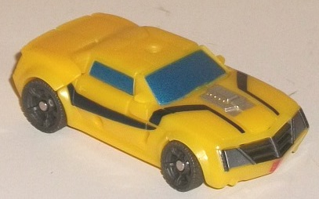
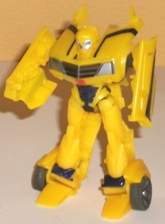
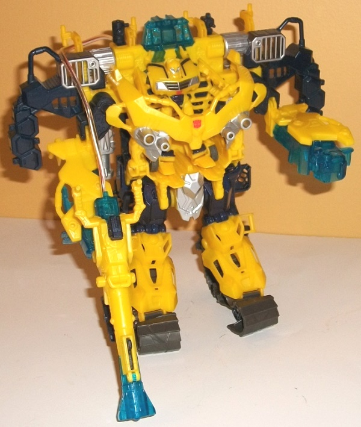
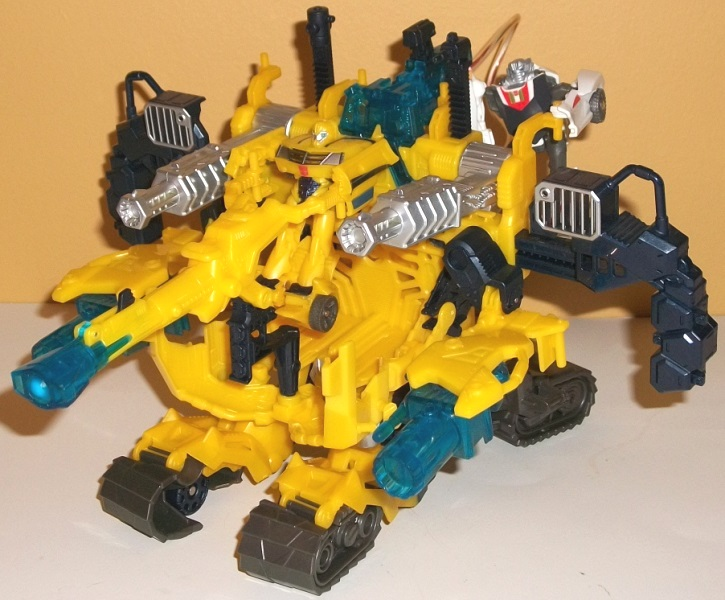

Allegiance
: Autobot
Size
: Cyberverse Vehicle Set
Difficulty of Transformation to Robot
:
Very Easy
Difficulty of Transformation of Vehicle
:
Very Easy
Color Scheme:
Yellow and some dark
charcoal gray, bluish black, silver, metallic gunmetal gray, transparent
blue, and moderately light metallic blue
Figure Rating
: 7.8
Vehicle-Armor Rating
: 7.7
(NOTE: Because this is a repaint, this is not a full-blown review. This mainly covers any changes made to the mold and the color scheme, and merely compares it to the original Prime "Robots in Disguise" legion Bumblebee. For a review on the mold itself, read the review of the original Prime "Robots in Disguise" legion Bumblebee figure here .)


When it comes to the
legion class Bumblebee toy that's included with the big ol' Battle Suit,
not much has changed about the figure compared to the original release--
it's more of a slight variant, sharing generally the same colors but using
slightly different shades of them. The yellow is a bit lighter and "lemony"
than on the original, while the black is a bit more impure; the black paint
actually looks a little blue if you shine a light directly on it, while
the tires and a few minor interior parts are honestly a rather ugly shade
of charcoal gray now.The front of the grill is metallic gunmetal gray,
not black, though the headlights, face, and engine block continue to be
silver. The paint detailing on 'Bee's chest is now bluish black instead
of silver, and the two short stripes that were in front of the engine block
on the original release of this mold are absent on this version. The paint
used for the windows also scales more towards the blue end than the silver
end of the spectrum, this time around. So, largely, this is just a slightly
lighter-shaded Bumblebee with dirty-looking tires. Overall I feel this
one is SLIGHTLY inferior to the original version, given that the yellow
doesn't look as accurate and the few aforementioned odd choices about ugly
dark gray on the wheels, but they certainly aren't big complaints; he's
more or less on the same level as his original release.
No mold changes have
been made to this version of Bumblebee.


The Battle Suit has
two modes, and we'll start with the one he's packaged in-- the "armor"
mode. It's certainly a big, buff, Bumblebee-colored exosuit-- though the
cockpit/chest cavity is big enough for pretty much any Cyberverse-scaled
figure, so Bumblebee doesn't necessary have to use it. (That said, the
downside of this is that there's no place for Bumblebee to "plug in", so
he just sort of stands rather loosely in the chest/cockpit area and jiggles
around a bit when you play with the set.) For a hulked-out armor suit,
the proportions are quite good with beefy limbs and legs that are a little
shorter than normal proportionally to help give it that "buff" look. Other
than the obvious handles on the sides of the shoulders, there aren't really
any major kibble issues in this mode either, with all the pieces that show
themselves in the vehicle mode folding up against the body or behind the
back quite well. The Prime aesthetic comes through loud and clear here,
with a lot of the mold detailing being a bit stylized and rather minimal
in some parts, while quite intricate in others, like the vents and the
like on the upper back. The color scheme is typical Bumblebee, with the
yellow plastic and silver paint fitting that on the little toy it comes
with exactly, and the "black" plastic actually being a very dark blue as
well. The ugly greyish brown plastic also makes a return here, but thankfully
it's only on the tread-feet, where it's a more fitting color. Added in
here is a bit more silver paint-- particularly on the chest and the guns
that are stored behind the back in this mode-- and transparent blue plastic
is used on the top of this mode as well as on the tip of a rather large
spring-loaded missile gun and the armor suit's fists. The added blue goes
nicely enough with the yellow, but it's primarily used for the little transparent
gun-on-a-wire that can be held in either of the suit's hands or plugged
in behind the top of this mode. It's supposed to shine a green light through
the blue plastic when you press down on the black piece on the top of this
gun, but as is sadly the case with the vast majority of Cyberverse toys
incorporating this gimmick, it barely works, if at all. (It's also worth
noting that the large gun can split into two separate handheld guns-- one
with the missile-firing gimmick and a smaller one with the light-shining
gimmick.) This toy has Cyberverse-scaled handles and ports out the wazoo,
so TONS of other Cyberverse weapons and figures can hang on/attach to this
mode if you want to beef it up even more. As far as articulation, this
mode can move side-to-side at the shoulders, as well as front-to-back at
the knees and hips. Not outstanding articulation, to be sure, but it's
a big bulky gimmicky armor suit, whadaya want?
Although not a nearly-automatic
transformation like the
Energon Driller
and
Starhammer
playsets, the transformation of Bumblebee's battle suit to vehicle mode
is still very simple. Pulling out on the shoulder handles causes the cockpit
to fold down while large silver guns fold forward over the shoulders and
some smaller guns rise up from the back. Bumblebee's fists are them flipped
around to show large transparent cannosn, and his legs are separated and
spread out to create the treads. The result, however... well, this is definitely
a secondary mode to the armor mode, that's for sure. If it wasn't for the
treads, I don't even think I'd recognize it as an actual vehicle-- it's
way too bulky, doesn't have any recognizable cockpit, and just looks like
his armor mode sitting down with the chest down. And unfortunately, this
"flipped down" chest/cockpit is a really bad idea-- as loose as the Bumblebee
toy was in the cockpit in armor mode, here there's NOWHERE for him to stand
in the center of this mode at all, and will easily fall out of the center
area by himself with even a little movement. Luckily, there's all those
aforementioned handles I talked about, and a platform lifts up behind the
back to allow Cyberverse figures to stand on it and hold the handles on
the upper back more easily without clinging onto them for dear life. The
large silver guns and flipped-around transparent blue guns do add some
definite firepower that the armor mode doesn't have, though I wish you
could flip out the silver guns without activating the part of the transformation
that flips down the cockpit/chest, so that the armor mode could have all
the weapons displayed if you so chose. The handheld gun from the armor
mode simply pegs into the center area rather unceremoniously, in a bad
attempt to cover up the huge gaping area in the middle of this mode-- at
least it gives the vehicle even more firepower, though. The shoulder bits
stick out even more obviously because of the transformation process, and
the treads are also pretty weak, being just waaay too obviously the feet
split in half lengthwise, and don't look like they'd work in real life.
(I suppose it is worth mentioning that they aren't real treads, having
just wheels on the bottoms to help the vehicle mode roll along.) Like other
Cyberverse Vehicle sets, in this mode there are clips on the sides to connect
it with other Cyberverse Vehicle sets in their base modes if you want to
make a "mega" base.
I'm torn on the Bumblebee Battle Suit set. On the one hand, the armor mode looks great, does its job well, has a ton of points for extra weapons or Cyberverse figures to cling/peg onto, and the Battle Suit's got a lot of weaponry. The armor/vehicle set also legitimately transforms , as opposed to a simple slider changing the base in between two slightly-different variants of the same mode. On the other hand, it's got a barely-different redeco of Bumblebee as the "core" figure that's pretty much just an extra if you already have the original Legion-class Prime Bumblebee, and the vehicle mode is pretty darn poor in nearly every aspect beyond "even more guns". Everything the vehicle mode does, the armor mode does better. If you're more into bases from these sets, I'd recommend one of the other Cyberverse Vehicle sets; however, if you want more of big accessory for a character, this mold is more suited for you out of the three 2012 releases in this assortment.
Review by Beastbot